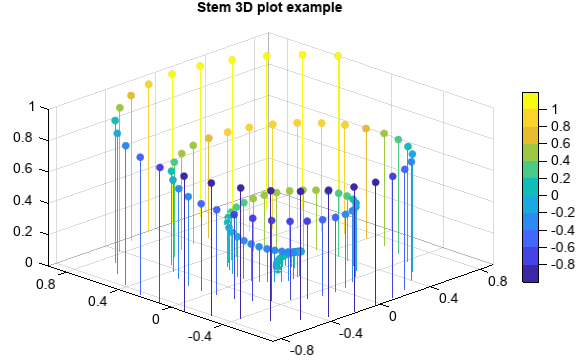

stem3¶
-
Axes3DGL.stem(x, y, z, s=8, c='b', marker='o', alpha=None, linewidth=None, -
verts=None, **kwargs): Make a 3D scatter plot of x, y and z, where x, y and z are sequence like objects of the same lengths.
- Parameters
x – (array_like) Input x data.
y – (array_like) Input y data.
z – (array_like) Input z data.
s – (int) Size of points.
c – (Color) Color of the points. Or z vlaues.
alpha – (int) The alpha blending value, between 0 (transparent) and 1 (opaque).
marker – (string) Marker of the points.
label – (string) Label of the points series.
levs – (array_like) Optional. A list of floating point numbers indicating the level points to draw, in increasing order.
- Returns
Stem graphics.
Example of
stem3functionz = linspace(0, 1, 100) x = z * np.sin(20 * z) y = z * np.cos(20 * z) c = x + y stem3(x, y, z, c=c, edge=False, samestemcolor=True) colorbar(shrink=0.8) title('Stem 3D plot example')